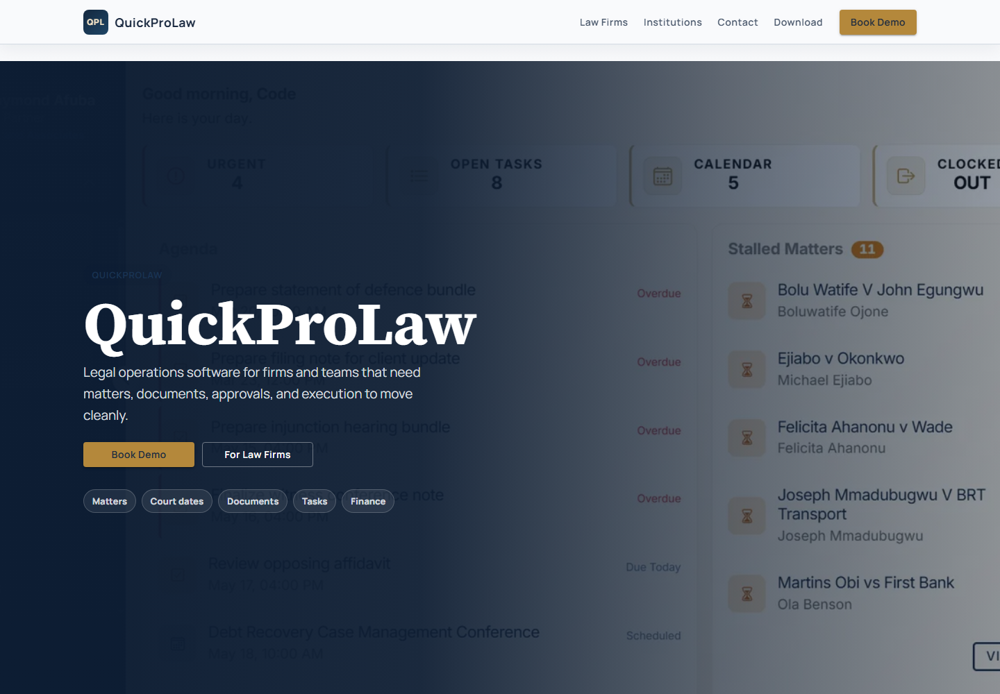
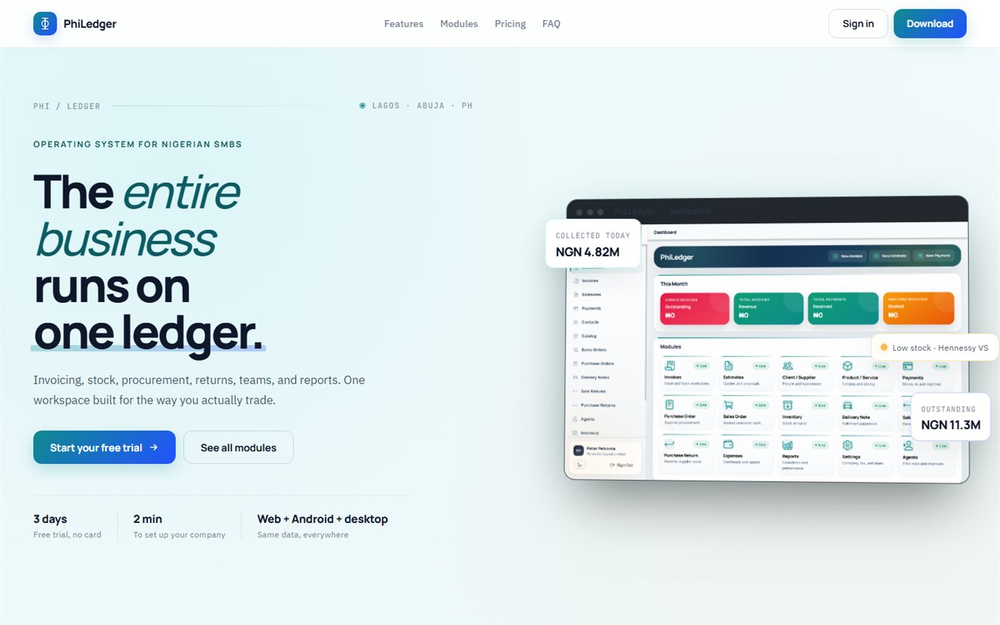
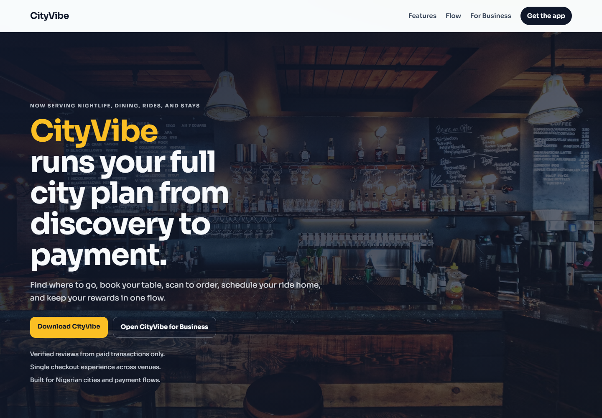
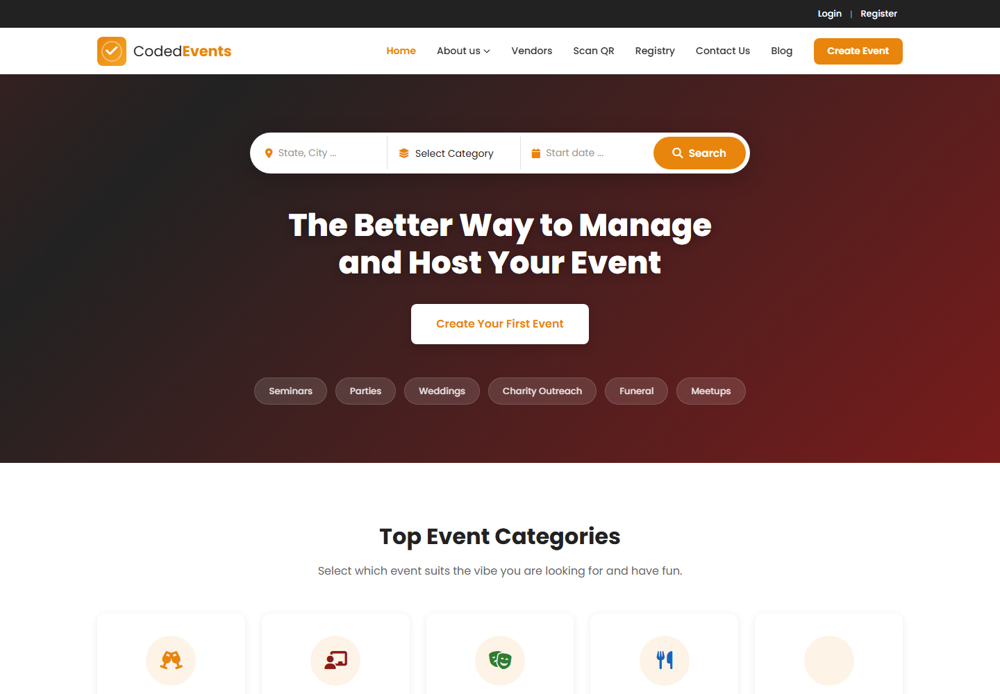
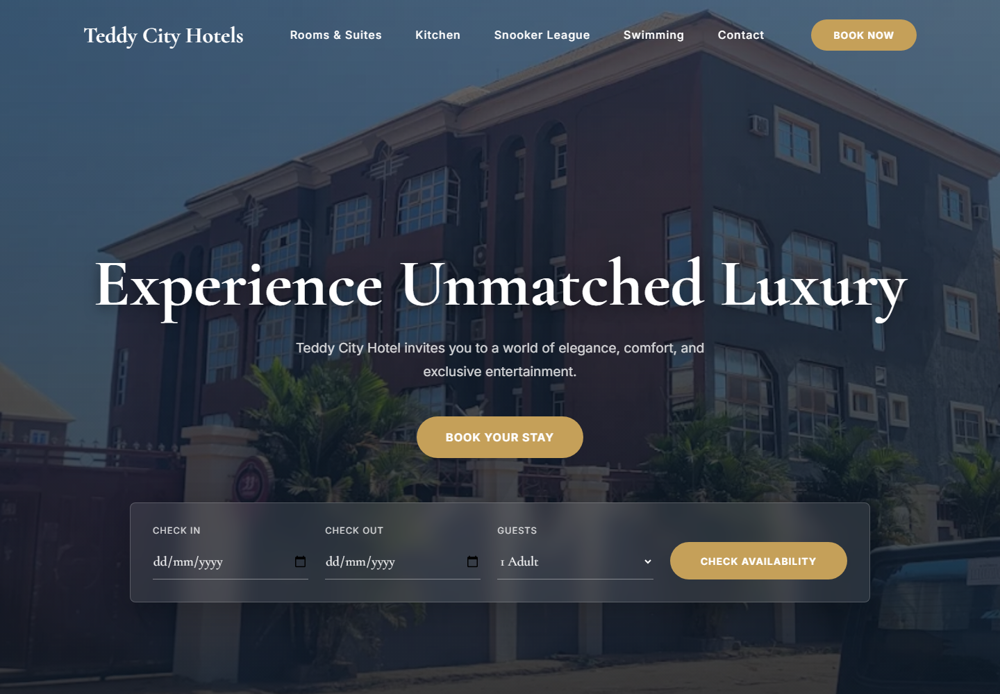

Full-stack product engineering, with equal weight on judgment, interface craft, systems thinking, and delivery.
SA
Sochima Afuba
Product engineering record
Sochima Afuba builds products that run real operations.
I build software for legal work, hospitality, small-business records, civic data, events, fitness, local commerce, and the internal tooling needed to keep those products moving.
I work close to the people using the system, model the workflow, then ship the smallest version that can survive real use.
Parabolic Capital is the operating vehicle behind this work. This page is my personal engineering record.
How I work
I start by understanding the business process, then I build the simplest reliable version of it.
I look for the core path first: who uses the product, what they need to record, what can go wrong, who approves it, and what the system must remember later.
That has meant working through real constraints with lawyers, property owners, hotel operators, small-business users, fitness staff, and internal users rather than building only from a clean plan.
Technical range
Across interface, backend, data, and deployment.
Frontend
Angular, Ionic-style app surfaces, responsive layouts, form-heavy workflows, dashboard views, and public websites.
Backend
Node, Express, NestJS, REST APIs, validation, auth boundaries, access control, document flows, and notification paths.
Data
Firestore, Supabase Postgres, business records, migrations, search, audit trails, and state models that survive edge cases.
Platforms
Firebase Hosting and Functions, Cloud Run, Docker, Paystack, Capacitor Android apps, and Tauri desktop packaging.
Delivery
Scope trimming, release slices, production checks, direct user feedback, and careful review of generated code before it ships.
Working range
From product shape to working systems.
Product shaping
I can turn "we need an app" into clear flows, data models, release slices, and the first version worth using.
Interface craft
I care about screens people can use every day: mobile density, empty states, failure states, and small wording choices that reduce confusion.
Operational thinking
I think in records, statuses, permissions, audit trails, reports, and handoffs because that is where real products need care.
Follow-through
I stay with the work past the first render: edge cases, copy, responsiveness, backend contracts, and release details matter.
Product families
The same pattern repeats across the work: define the workflow, model the records, build the usable surface, then make the system hold up in production.
Legal systems
QuickProLaw and QPL Sign cover law-firm operations, document work, signing, contract execution, verification, and firm finance.
Hospitality systems
QuickProHost and Teddy City Hotels cover property inventory, direct booking, guest flows, admin operations, revenue, and notifications.
Business operations
PhiLedger covers estimates, invoices, payments, stock, expenses, reports, customer records, suppliers, and team access.
Consumer and community products
CityVibe, CodedEvents, PollingUnit, and MuFit Studio cover city discovery, events, civic lookup, fitness studio operations, member bookings, and attendance.
Product portfolio
Selected product work.

01QuickProLaw
Multi-tenant legal operations product for firms and departments: matters, documents, deadlines, tasks, finance, permissions, and signing handoff.
Website Web app 02
02
QuickProHost
Multi-tenant shortlet operations platform for property owners: listings, booking holds, guest links, Paystack checkout, finance, inspections, and owner workflows.
Web app Firebase app
03PhiLedger
Multi-tenant business operations platform for SMBs: invoicing, stock, procurement, payment logging, reporting, team access, web, Android, and desktop builds.
Front page Web, Android, desktop 04
04

05
06CodedEvents
Event administration product with permission access, validation, audit logging, Firebase auth, Supabase Postgres, API documentation, Docker, and Cloud Run paths.
Website
07Teddy City Hotels
Hotel operations and public web presence covering rooms, bookings, amenities, food service, revenue records, staff users, and notifications.
Website 08
08
MuFit Studio
Fitness studio business with website, member app, bookings, credits, purchases, netball programmes, instructor rosters, check-ins, and admin operations.
Website 09
09
PollingUnit
Civic data product for polling-unit search, autocomplete, public information flows, and migration from Mongo-style records into Firestore-backed data.
Website